# A tibble: 81 × 4
Almacenamiento Archivo RAM Tiempo
<dbl> <dbl> <dbl> <dbl>
1 1 1 1 5.43
2 2 2 1 2.65
3 3 2 1 4.7
4 3 2 2 4.07
5 3 1 1 3.91
6 2 2 2 2.13
7 1 1 3 6.26
8 2 1 2 1.78
9 2 3 2 2.32
10 2 3 3 2.43
# ℹ 71 more rowsOptimización de la transferencia de bases de datos: Un análisis factorial del tipo de archivo, dispositivo de almacenamiento y uso de RAM

Introducción
Actualmente, el análisis de datos ha experimentado popularidad debido a la creciente importancia de la toma de decisiones basada en información cuantitativa y cualitativa. Organizaciones de todos los sectores están adoptando tecnologías avanzadas para recopilar, procesar y analizar datos, lo que ha llevado a un aumento exponencial en el tamaño de las bases de datos, lo que trae consigo nuevos desafíos relacionados con el manejo eficiente de grandes volúmenes de información.
En este contexto, DataXD, una empresa especializada en el análisis de datos, enfrenta dificultades debido a los largos tiempos de transferencia de archivos, especialmente en operaciones que involucran dispositivos de almacenamiento y distintos sistemas. Estas demoras representan un importante cuello de botella en sus procesos operativos, impactando negativamente la productividad y limitando su capacidad para entregar resultados en tiempos competitivos. El manejo ineficiente de la transferencia de datos genera tiempos muertos innecesarios, desperdicio de recursos y mayores costos operativos.
Esto hace indispensable analizar y optimizar los factores que influyen en estos tiempos. Por ello, este estudio busca identificar cómo el tipo de archivo, el tipo de dispositivo de almacenamiento y el uso de recursos tecnológicos, específicamente la memoria RAM inciden en el tiempo de transferencia de las bases de datos, para generar soluciones prácticas y aplicables desde la perspectiva de la ingeniería industrial, optimizando los procesos tecnológicos, reduciendo tiempos de espera y mejorando la eficiencia operativa de DataXD, contribuyendo así a la mejora continua de sus procesos.
Objetivos
Analizar los tres factores seleccionados para ver la influencia de estos en la transferencia de bases de datos a partir de análisis de regresión.
Optimizar el proceso de transferencia de datos para reducir el tiempo de descarga de las bases de datos de gran volumen. analizando cómo el tipo de archivo, tipo de dispositivo de almacenamiento y uso de RAM impactan en el tiempo de descarga, reduciendo así tiempos muertos y aumentando la eficiencia operativa de la empresa.
Establecer la mejor combinación de tipo de archivo, dispositivo de almacenamiento y uso de RAM, con la finalidad de eliminar del proceso productivo aquellos que no son eficientes ni eficaces con la labor de la empresa.
Descripción del Experimento
Objetivo
Determinar el tiempo que se demora en transferir una base de datos a diferentes tipos de almacenamiento, diferentes tipos de archivos y a diferentes porcentajes de uso de de la RAM.
Diagrama del proceso

Variable respuesta
Tiempo de transferencia de datos (segundos).
Unidad experimental
Base de Datos (más de 1’000.000 de datos).
Número de tratamientos
• Tipos de almacenamiento: 3 Niveles (USB, Disco duro y La Nube)
• Tipos de archivos: 3 Niveles (xlsx, csv y txt)
• Uso de la memoria RAM: 3 Niveles (30%, 50% y 70%)
Total de tratamientos: 3×3×3= 27 Tratamientos.
Número de Réplicas por Tratamiento
Para asegurar la validez y robustez de los resultados obtenidos, se harán 3 réplicas por cada tratamiento.
Número de Réplicas por Tratamiento
Total de observaciones: 27 tratamientos × 3 réplicas = 81 Observaciones.
Aleatorización
Para aleatorizar el experimento se uso la función SAMPLE de R, esta función arrojó valores de 1 a 81 sin repetir ninguno de estos. Las muestras del experimento se tomaron en este orden, tal como se puede observar en la siguiente imagen:

Transformamos nuestras variables de númericas a factores para hacer los análisis.
Análisis exploratorio de nuestras variables
A continuación, se presentan gráficos boxplot comparativos, de medias, de interacción y de diseño, de los tres factores contra la variable respuesta (Tiempo de transferencia), proporcionando una visión detallada de los datos y sus relaciones.
Gráficos comparativos Boxplot
Almacenamiento y Tiempo
El boxplot entre almacenamiento y tiempo de transferenecia, muestra la siguiente información: El tipo de almacenamiento 1 correspondiente a la USB, requiere un mayor tiempo para transferir la base de datos, además, se puede ver una variabilidad mayor en comparación con los otros dos tipos de alamacenamiento. El tipo de almacenamiento 2 corresponde al Disco Duro, este requiere un menor tiempo requerido para hacer la transferencia de la base de datos y, su media ronda los 2,4 segundos. Por último, el tipo de almacenamiento 3 correspondiente a la Nube, es la segunda mejor opción para transferir la base de datos, pues, su media ronda los 3,8 segundos.
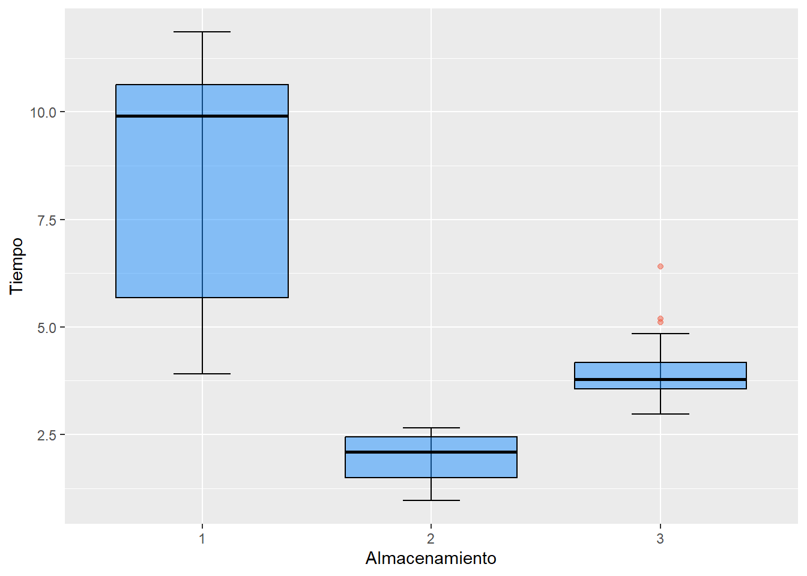
Archivos y Tiempo
El boxplot entre archivo y tiempo de transferenecia, muestra la siguiente información: La media de los tres tipos de archivo es muy similar ya que rondan entre los 3,7 y 4 segundos, sin embargo, se puede observar que el tipo de archivo 2 y 3 que corresponde a un archivo CSV y TXT, respectivamente, tiene una variabilidad más amplia del tiempo de transferencia de la base de datos, comparándola con el tipo de archivo 1, el cual es un archivo tipo XSLX.
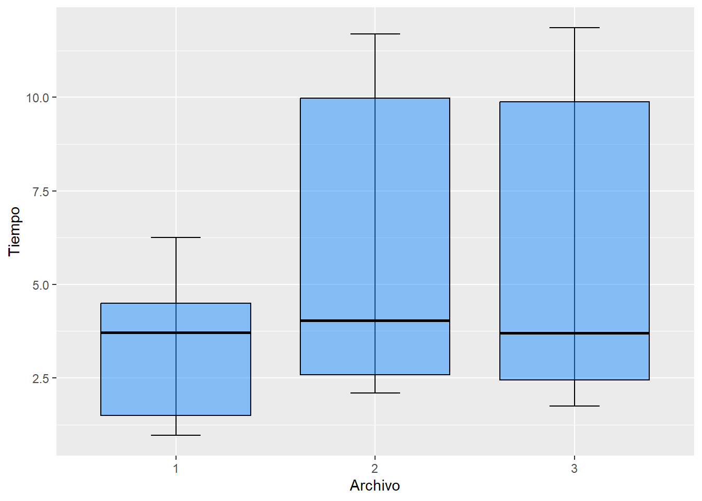
RAM y Tiempo
El boxplot entre el uso de la RAM y el tiempo de transferenecia, muestra la siguiente información: Se puede afirmar que las medias de los tres tipos de usos de RAM son muy parecidas entre ellas, observando un rango de media entre 3,6 y 4 segundos. Del mismo modo, la variabilidad en el tiempo de los tres tipos cuentan con un rango similar, pues, sus valores estan entre los 2,5 segundos y 6,2 segundos, siendo el de mayor variabilidad la RAM 2 que corresponde al 50%. La RAM 1 y 3 tienen una variabilidad mucho más similar entre ellas, pero no muy alejadas de la RAM 2..
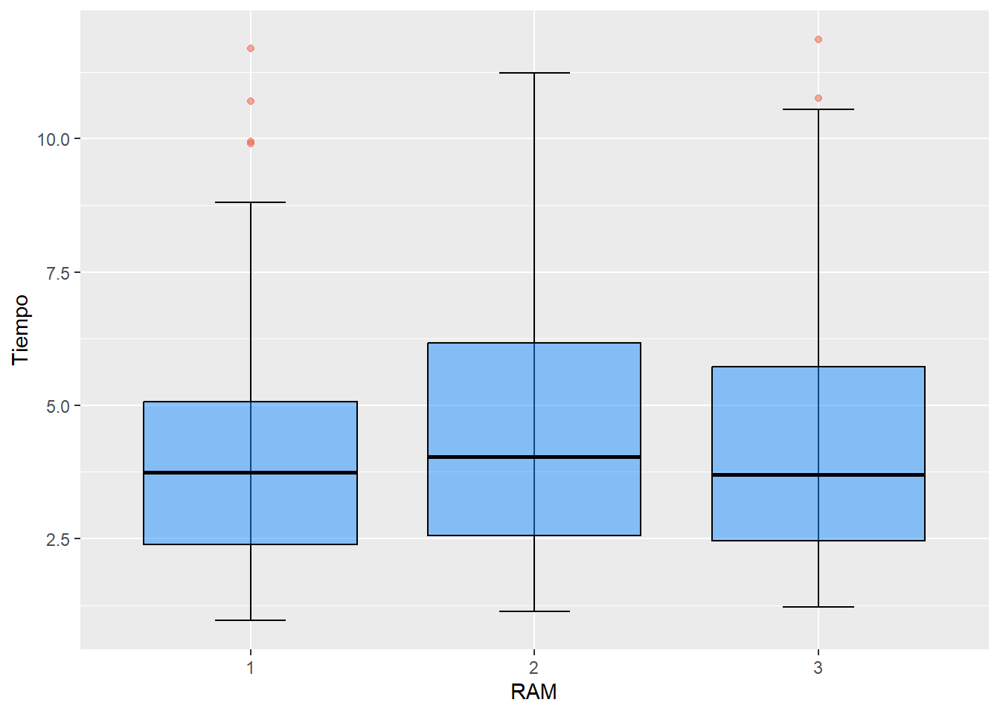
Gráficos de medias entre el tiempo y los factores
En los siguientes gráficos de medias podemos observar las medias del tiempo de transferencia vs el tipo de almacenamiento, tipo de archivo y uso de la RAM.
En el grafico 1 se puede analizar que los tiempos promedios del tipo de almacenamiento 1 correspondiente a la USB es la mayor de todas, mientras que el tipo de almacenamiento 2 correspondiente al Disco Duro es el de menor tiempo promedio de transferencia.
En el gráfico 2 el cual corresponde al tiempo vs archivo se puede asegurar que el tipo de archivo que necesita menos tiempo promedio en transferirse es el archivo , correspondiente archivo XLSX, como contraparte, el archivo que más necesita tiempo es el tipo de archivo número 2 el cual corresponde al archivo CSV.
En el gráfico 3 que corresponde al tiempo vs RAM se observan tiempos muy similares, sin embargo, la que necesita menos tiempo promedio en transferirse es la RAM 1 la cual corresponde al uso de la RAM del 30% , por otro lado, el mayor tiempo promedio requerido para la transferencia de datos es la RAM 2 que corresponde al uso de la RAM del 50%. Este resultado podría ir en contra de la lógica, pues, se esperaría que la RAM 3 que corresponde al uso del 70% debería necesitar más tiempo de transferencia.
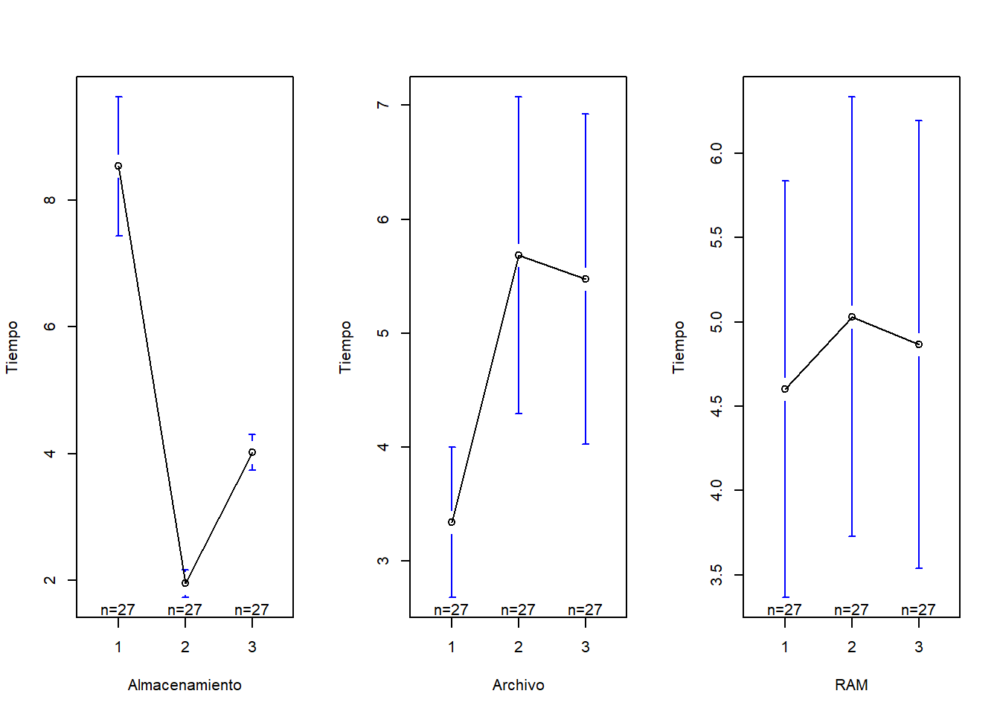
Gráficos de interacción
En estas gráficas vamos a poder observar como interactuan los factores por pares respecto al tiempo de transferencia.
Almacenamineto vs Archivo
En el gráfico 1 podemos observar las lineas de archivo 2 y 3 no tienen diferencias significativas, esto es debido a que tiene tiempos de transferencia similares, contrario a al archivo 1 que corresponde al archivo XLSX, este tipo de archivo dependiendo su tipo de almacenamiento es un tiempo promedio menor a los otros.
En el gráfico 2 se pueden detallar tiempos de transferencia diferentes entre ellos, se puede afirmar que el tipo de almacenamiento 1 correspondiente a la USB, independientemente de los tres tipos de archivo son los que más se demoran en el tiempo de transferencia, además, el almacenamiento 2 correspondiente al Disco Duro, es el de menor tiempo promedio requerido para la transferencia en todos los tipos de archivo.
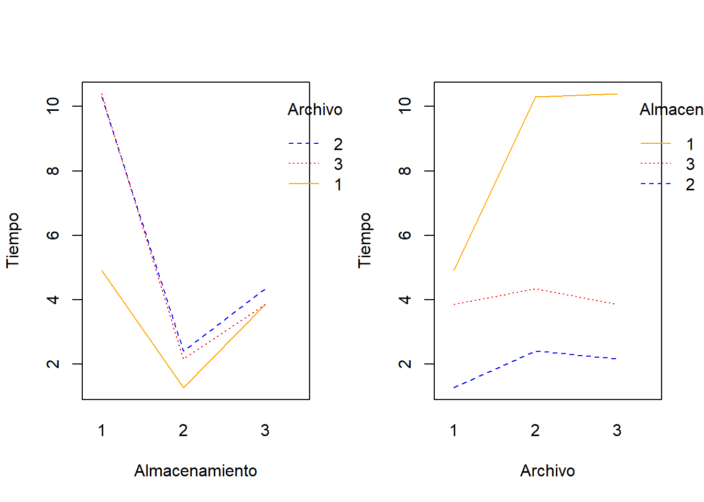
Archivo vs RAM
En el gráfico 1 podemos observar las lineas de RAM 1,2 y 3, estas no se sobreponen pero sí siguen la misma tendencia, ya que tienen tiempos de transferencia similares. Sin embargo, en el archivo 3 y debido a la RAM 1 (uso del 30%) se puede ver un cambio significativo en el tiempo de transferencia de la base de datos respecto a las otras en este archivo (TXT).
En el gráfico 2 se pueden detallar tiempos de transferencia diferentes entre ellos, además, se puede afirmar que el tipo de archivo 1 correspondiente a XLSX es el que menos tiempo necesita para transferirse sin importar el uso de la RAM. De los otros tipos de archivo podemos observar un tiempo de carga similar entre ellos, donde la diferencia más notoria es en la uso de la RAM 1 la cual corresponde al 30%.
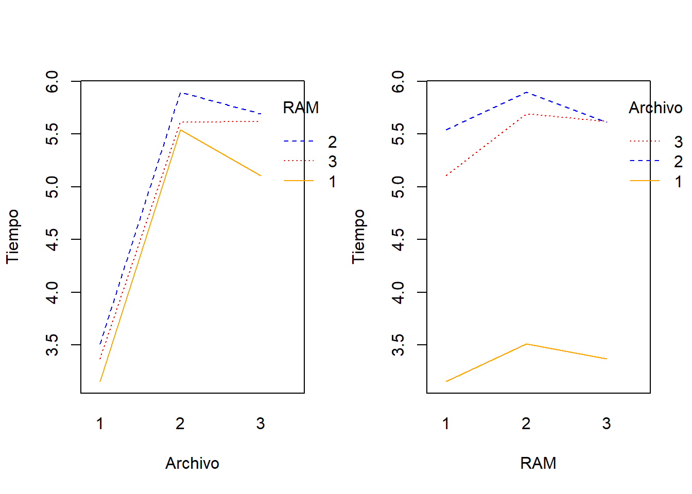
Almacenamiento vs RAM
En el gráfico 1 podemos observar que los diferentes usos de la RAM no son significativas entre ellas, pues, sus tiempos de transferencia son muy similares, independientes de los tipos de almacenamiento.
En el gráfico 2 se pueden visualizar tiempos de transferencia diferentes entre ellos, además, afirmando que el tipo de almacenamieneto 1 (USB) es el que más tiempo necesita para transferirse independiente del uso de la RAM, adicionlamente, el tipo de almacenamineto 2 (Disco Duro) es el que menos tiempo necesita para la transferencia de la base de datos en cualquier caso de uso de la RAM.
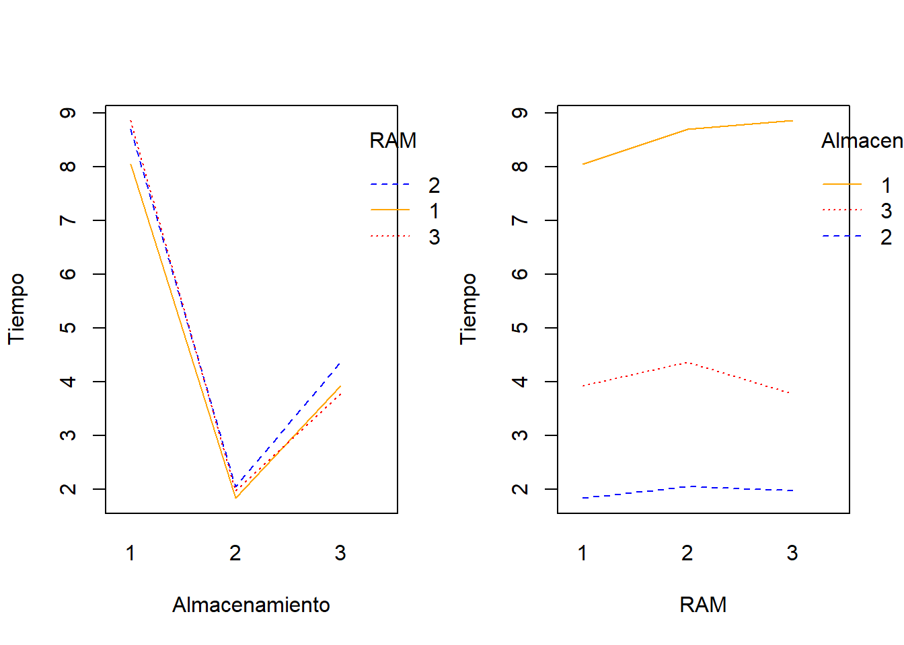
Gráfico de los diferentes niveles del factor
Con esta gráfica podemos observar que la media general esta en casi 5 segundos, los tipos de almacenamiento son los que más variabilidad presentan respecto al promedio del tiempo de transferencia, por otro lado, el tipo de archivo es el que le sigue en variabilidad, sin embargo, podemos notar que no varía mucho respecto al promedio y, que el tipo de archivo 2 y 3 tienen tiempos promedio parecidos entre ellos. Por último, en el uso de la RAM se puede observar una variabilidad muy pequeña respecto al tiempo promedio y, por ende, poca diferencia entre los tiempos promedio de cada uso de la RAM.
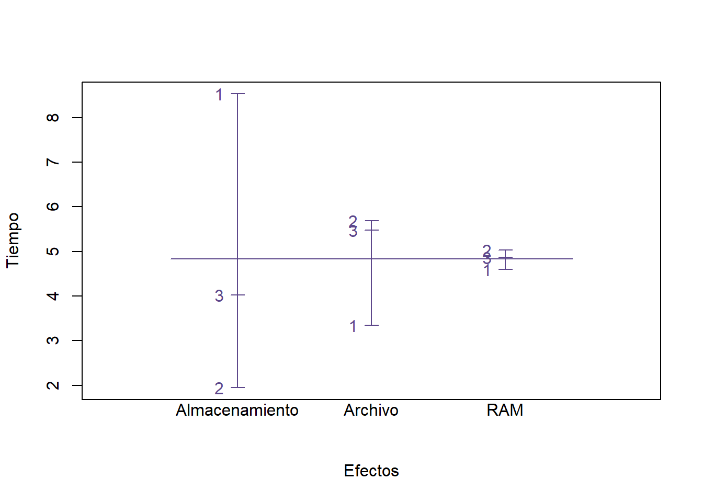
Modelos de regresión y efectos
En este parte del análisis vamos a plantear diferentes modelos de regresión y de efectos para llegar al mejor modelo posible y, en base a este modelo, encontrar la mejor combinación de factores que reduzca al máximo el tiempo de transferencia de las bases de datos.
Modelos de regresion
Modelo 1
Call:
lm(formula = Tiempo ~ Almacenamiento * Archivo * RAM, data = ZZZ)
Residuals:
Min 1Q Median 3Q Max
-2.0967 -0.3167 -0.0600 0.3333 1.5700
Coefficients:
Estimate Std. Error t value Pr(>|t|)
(Intercept) 4.42667 0.41152 10.757 4.85e-15 ***
Almacenamiento2 -3.40667 0.58197 -5.854 2.92e-07 ***
Almacenamiento3 -0.41667 0.58197 -0.716 0.4771
Archivo2 5.73000 0.58197 9.846 1.18e-13 ***
Archivo3 5.13000 0.58197 8.815 4.88e-12 ***
RAM2 0.53667 0.58197 0.922 0.3606
RAM3 0.90000 0.58197 1.546 0.1278
Almacenamiento2:Archivo2 -4.39667 0.82304 -5.342 1.89e-06 ***
Almacenamiento3:Archivo2 -5.63000 0.82304 -6.841 7.48e-09 ***
Almacenamiento2:Archivo3 -4.02667 0.82304 -4.892 9.37e-06 ***
Almacenamiento3:Archivo3 -5.49333 0.82304 -6.674 1.39e-08 ***
Almacenamiento2:RAM2 -0.13667 0.82304 -0.166 0.8687
Almacenamiento3:RAM2 -0.40333 0.82304 -0.490 0.6261
Almacenamiento2:RAM3 -0.55000 0.82304 -0.668 0.5068
Almacenamiento3:RAM3 -1.50667 0.82304 -1.831 0.0727 .
Archivo2:RAM2 -0.28333 0.82304 -0.344 0.7320
Archivo3:RAM2 0.61333 0.82304 0.745 0.4594
Archivo2:RAM3 -0.72000 0.82304 -0.875 0.3856
Archivo3:RAM3 0.44667 0.82304 0.543 0.5896
Almacenamiento2:Archivo2:RAM2 -0.03333 1.16395 -0.029 0.9773
Almacenamiento3:Archivo2:RAM2 0.88000 1.16395 0.756 0.4529
Almacenamiento2:Archivo3:RAM2 -0.86333 1.16395 -0.742 0.4615
Almacenamiento3:Archivo3:RAM2 -0.30000 1.16395 -0.258 0.7976
Almacenamiento2:Archivo2:RAM3 0.43333 1.16395 0.372 0.7111
Almacenamiento3:Archivo2:RAM3 1.30667 1.16395 1.123 0.2666
Almacenamiento2:Archivo3:RAM3 -0.79667 1.16395 -0.684 0.4966
Almacenamiento3:Archivo3:RAM3 0.35000 1.16395 0.301 0.7648
---
Signif. codes: 0 '***' 0.001 '**' 0.01 '*' 0.05 '.' 0.1 ' ' 1
Residual standard error: 0.7128 on 54 degrees of freedom
Multiple R-squared: 0.967, Adjusted R-squared: 0.9511
F-statistic: 60.91 on 26 and 54 DF, p-value: < 2.2e-16Modelo 2
modelolm2 <- lm(Tiempo~ Almacenamiento * Archivo + RAM, data = ZZZ)
summary(modelolm2)
Call:
lm(formula = Tiempo ~ Almacenamiento * Archivo + RAM, data = ZZZ)
Residuals:
Min 1Q Median 3Q Max
-2.0083 -0.3731 -0.0642 0.3114 1.8647
Coefficients:
Estimate Std. Error t value Pr(>|t|)
(Intercept) 4.6727 0.2494 18.739 < 2e-16 ***
Almacenamiento2 -3.6356 0.3190 -11.397 < 2e-16 ***
Almacenamiento3 -1.0533 0.3190 -3.302 0.00151 **
Archivo2 5.3956 0.3190 16.915 < 2e-16 ***
Archivo3 5.4833 0.3190 17.190 < 2e-16 ***
RAM2 0.4315 0.1842 2.343 0.02198 *
RAM3 0.2670 0.1842 1.450 0.15153
Almacenamiento2:Archivo2 -4.2633 0.4511 -9.451 3.97e-14 ***
Almacenamiento3:Archivo2 -4.9011 0.4511 -10.864 < 2e-16 ***
Almacenamiento2:Archivo3 -4.5800 0.4511 -10.153 2.12e-15 ***
Almacenamiento3:Archivo3 -5.4767 0.4511 -12.140 < 2e-16 ***
---
Signif. codes: 0 '***' 0.001 '**' 0.01 '*' 0.05 '.' 0.1 ' ' 1
Residual standard error: 0.6767 on 70 degrees of freedom
Multiple R-squared: 0.9615, Adjusted R-squared: 0.956
F-statistic: 174.7 on 10 and 70 DF, p-value: < 2.2e-16Modelo 3
Call:
lm(formula = Tiempo ~ Almacenamiento * Archivo, data = ZZZ)
Residuals:
Min 1Q Median 3Q Max
-2.2411 -0.3100 -0.1211 0.2967 2.0633
Coefficients:
Estimate Std. Error t value Pr(>|t|)
(Intercept) 4.9056 0.2311 21.225 < 2e-16 ***
Almacenamiento2 -3.6356 0.3268 -11.123 < 2e-16 ***
Almacenamiento3 -1.0533 0.3268 -3.223 0.00191 **
Archivo2 5.3956 0.3268 16.508 < 2e-16 ***
Archivo3 5.4833 0.3268 16.776 < 2e-16 ***
Almacenamiento2:Archivo2 -4.2633 0.4622 -9.223 8.03e-14 ***
Almacenamiento3:Archivo2 -4.9011 0.4622 -10.603 2.34e-16 ***
Almacenamiento2:Archivo3 -4.5800 0.4622 -9.908 4.35e-15 ***
Almacenamiento3:Archivo3 -5.4767 0.4622 -11.848 < 2e-16 ***
---
Signif. codes: 0 '***' 0.001 '**' 0.01 '*' 0.05 '.' 0.1 ' ' 1
Residual standard error: 0.6934 on 72 degrees of freedom
Multiple R-squared: 0.9584, Adjusted R-squared: 0.9538
F-statistic: 207.3 on 8 and 72 DF, p-value: < 2.2e-16En todos los modelos que se plantearon anteriormente, se puede analizar, como observabamos en los gráficos de análisis exploratorios que la RAM no es un factor significativo para determinar el tiempo de transferencia. Esto se puede visualizar en los modelo de regresión, pues, al interactuar el uso de la RAM con los otros dos factores(Almacenamiento y Archivo) no daban significativos, por ende, tomamos la decisión de utilizar el modelolm3 el cual no incluye el factor uso de la RAM, aunque nuestro valor de la R-cuadrada ajustada nos de un poquito menor en este modelo.
Modelos de efectos
Anova 1
Call:
lm(formula = Tiempo ~ Almacenamiento * Archivo * RAM, data = ZZZ)
Residuals:
Min 1Q Median 3Q Max
-2.0967 -0.3167 -0.0600 0.3333 1.5700
Coefficients:
Estimate Std. Error t value Pr(>|t|)
(Intercept) 4.42667 0.41152 10.757 4.85e-15 ***
Almacenamiento2 -3.40667 0.58197 -5.854 2.92e-07 ***
Almacenamiento3 -0.41667 0.58197 -0.716 0.4771
Archivo2 5.73000 0.58197 9.846 1.18e-13 ***
Archivo3 5.13000 0.58197 8.815 4.88e-12 ***
RAM2 0.53667 0.58197 0.922 0.3606
RAM3 0.90000 0.58197 1.546 0.1278
Almacenamiento2:Archivo2 -4.39667 0.82304 -5.342 1.89e-06 ***
Almacenamiento3:Archivo2 -5.63000 0.82304 -6.841 7.48e-09 ***
Almacenamiento2:Archivo3 -4.02667 0.82304 -4.892 9.37e-06 ***
Almacenamiento3:Archivo3 -5.49333 0.82304 -6.674 1.39e-08 ***
Almacenamiento2:RAM2 -0.13667 0.82304 -0.166 0.8687
Almacenamiento3:RAM2 -0.40333 0.82304 -0.490 0.6261
Almacenamiento2:RAM3 -0.55000 0.82304 -0.668 0.5068
Almacenamiento3:RAM3 -1.50667 0.82304 -1.831 0.0727 .
Archivo2:RAM2 -0.28333 0.82304 -0.344 0.7320
Archivo3:RAM2 0.61333 0.82304 0.745 0.4594
Archivo2:RAM3 -0.72000 0.82304 -0.875 0.3856
Archivo3:RAM3 0.44667 0.82304 0.543 0.5896
Almacenamiento2:Archivo2:RAM2 -0.03333 1.16395 -0.029 0.9773
Almacenamiento3:Archivo2:RAM2 0.88000 1.16395 0.756 0.4529
Almacenamiento2:Archivo3:RAM2 -0.86333 1.16395 -0.742 0.4615
Almacenamiento3:Archivo3:RAM2 -0.30000 1.16395 -0.258 0.7976
Almacenamiento2:Archivo2:RAM3 0.43333 1.16395 0.372 0.7111
Almacenamiento3:Archivo2:RAM3 1.30667 1.16395 1.123 0.2666
Almacenamiento2:Archivo3:RAM3 -0.79667 1.16395 -0.684 0.4966
Almacenamiento3:Archivo3:RAM3 0.35000 1.16395 0.301 0.7648
---
Signif. codes: 0 '***' 0.001 '**' 0.01 '*' 0.05 '.' 0.1 ' ' 1
Residual standard error: 0.7128 on 54 degrees of freedom
Multiple R-squared: 0.967, Adjusted R-squared: 0.9511
F-statistic: 60.91 on 26 and 54 DF, p-value: < 2.2e-16Anova 2
modeloaov2 <- aov(Tiempo~ Almacenamiento * Archivo + RAM, data = ZZZ)
summary(modelolm2)
Call:
lm(formula = Tiempo ~ Almacenamiento * Archivo + RAM, data = ZZZ)
Residuals:
Min 1Q Median 3Q Max
-2.0083 -0.3731 -0.0642 0.3114 1.8647
Coefficients:
Estimate Std. Error t value Pr(>|t|)
(Intercept) 4.6727 0.2494 18.739 < 2e-16 ***
Almacenamiento2 -3.6356 0.3190 -11.397 < 2e-16 ***
Almacenamiento3 -1.0533 0.3190 -3.302 0.00151 **
Archivo2 5.3956 0.3190 16.915 < 2e-16 ***
Archivo3 5.4833 0.3190 17.190 < 2e-16 ***
RAM2 0.4315 0.1842 2.343 0.02198 *
RAM3 0.2670 0.1842 1.450 0.15153
Almacenamiento2:Archivo2 -4.2633 0.4511 -9.451 3.97e-14 ***
Almacenamiento3:Archivo2 -4.9011 0.4511 -10.864 < 2e-16 ***
Almacenamiento2:Archivo3 -4.5800 0.4511 -10.153 2.12e-15 ***
Almacenamiento3:Archivo3 -5.4767 0.4511 -12.140 < 2e-16 ***
---
Signif. codes: 0 '***' 0.001 '**' 0.01 '*' 0.05 '.' 0.1 ' ' 1
Residual standard error: 0.6767 on 70 degrees of freedom
Multiple R-squared: 0.9615, Adjusted R-squared: 0.956
F-statistic: 174.7 on 10 and 70 DF, p-value: < 2.2e-16Anova 3
Call:
lm(formula = Tiempo ~ Almacenamiento * Archivo, data = ZZZ)
Residuals:
Min 1Q Median 3Q Max
-2.2411 -0.3100 -0.1211 0.2967 2.0633
Coefficients:
Estimate Std. Error t value Pr(>|t|)
(Intercept) 4.9056 0.2311 21.225 < 2e-16 ***
Almacenamiento2 -3.6356 0.3268 -11.123 < 2e-16 ***
Almacenamiento3 -1.0533 0.3268 -3.223 0.00191 **
Archivo2 5.3956 0.3268 16.508 < 2e-16 ***
Archivo3 5.4833 0.3268 16.776 < 2e-16 ***
Almacenamiento2:Archivo2 -4.2633 0.4622 -9.223 8.03e-14 ***
Almacenamiento3:Archivo2 -4.9011 0.4622 -10.603 2.34e-16 ***
Almacenamiento2:Archivo3 -4.5800 0.4622 -9.908 4.35e-15 ***
Almacenamiento3:Archivo3 -5.4767 0.4622 -11.848 < 2e-16 ***
---
Signif. codes: 0 '***' 0.001 '**' 0.01 '*' 0.05 '.' 0.1 ' ' 1
Residual standard error: 0.6934 on 72 degrees of freedom
Multiple R-squared: 0.9584, Adjusted R-squared: 0.9538
F-statistic: 207.3 on 8 and 72 DF, p-value: < 2.2e-16Del mismo modo que en la creación de modelos de regresión, en la creación de los modelos de efectos, la RAM y las interacciones que esta tenía no daban significativas, por este mismo motivo, elegimos el modeloaov3 para analizar el tiempo de transferencia de la base de datos utilizando sólo los dos factores significativos.
Df Sum Sq Mean Sq F value Pr(>F)
Almacenamiento 2 611.9 305.96 636.45 <2e-16 ***
Archivo 2 90.6 45.29 94.21 <2e-16 ***
Almacenamiento:Archivo 4 94.9 23.72 49.34 <2e-16 ***
Residuals 72 34.6 0.48
---
Signif. codes: 0 '***' 0.001 '**' 0.01 '*' 0.05 '.' 0.1 ' ' 1
Call:
lm(formula = Tiempo ~ Almacenamiento * Archivo, data = ZZZ)
Residuals:
Min 1Q Median 3Q Max
-2.2411 -0.3100 -0.1211 0.2967 2.0633
Coefficients:
Estimate Std. Error t value Pr(>|t|)
(Intercept) 4.9056 0.2311 21.225 < 2e-16 ***
Almacenamiento2 -3.6356 0.3268 -11.123 < 2e-16 ***
Almacenamiento3 -1.0533 0.3268 -3.223 0.00191 **
Archivo2 5.3956 0.3268 16.508 < 2e-16 ***
Archivo3 5.4833 0.3268 16.776 < 2e-16 ***
Almacenamiento2:Archivo2 -4.2633 0.4622 -9.223 8.03e-14 ***
Almacenamiento3:Archivo2 -4.9011 0.4622 -10.603 2.34e-16 ***
Almacenamiento2:Archivo3 -4.5800 0.4622 -9.908 4.35e-15 ***
Almacenamiento3:Archivo3 -5.4767 0.4622 -11.848 < 2e-16 ***
---
Signif. codes: 0 '***' 0.001 '**' 0.01 '*' 0.05 '.' 0.1 ' ' 1
Residual standard error: 0.6934 on 72 degrees of freedom
Multiple R-squared: 0.9584, Adjusted R-squared: 0.9538
F-statistic: 207.3 on 8 and 72 DF, p-value: < 2.2e-16Por ende, los modelos seleccionados para hacer estos análisis van a ser el modelolm3 renombrado modelolm y el modeloaov3 renombrado modelo.
Análisis de varianza
A la hora de calcular la cantidad controlable llamada Tratamiento para el modelo escogido encontramos que, el porcentaje controlable es de 95,84% y la cantidad no controlable, llamada Error, es de 4,16%. Esto es un buen indicador, pues el modelo escogido tiene buen efecto, debido a que su mayor porcentaje de variabilidad se debe a los tratamiento y no al error.
[1] 0.9583977[1] 0.04160232Validación del modelo
Aunque el modelo elegido tenga un excelente porcentaje de predicción y control, es necesario comprobar que sea válido estadísticamente, por esto, vamos a someterlo a pruebas de normalidad, varianza constante e independencia.
Normalidad
Gráficos
En los siguientes gráficos podemos observar que el modelo no tiene una tendencia de normalidad, esto es debido a que en el gráfico 1 se puede observar que varios datos no están entre las bandas de confianza, lo que quiere decir que los datos no cumplen una tendencia normal, similarmente, en el gráfico del histograma también podemos observar que los datos aunque siguen una tendencia simetrica normal, algunas de las barras no tienen la misma altura a su contraparte, por ende, se concluye que no siguen una distribución normal.
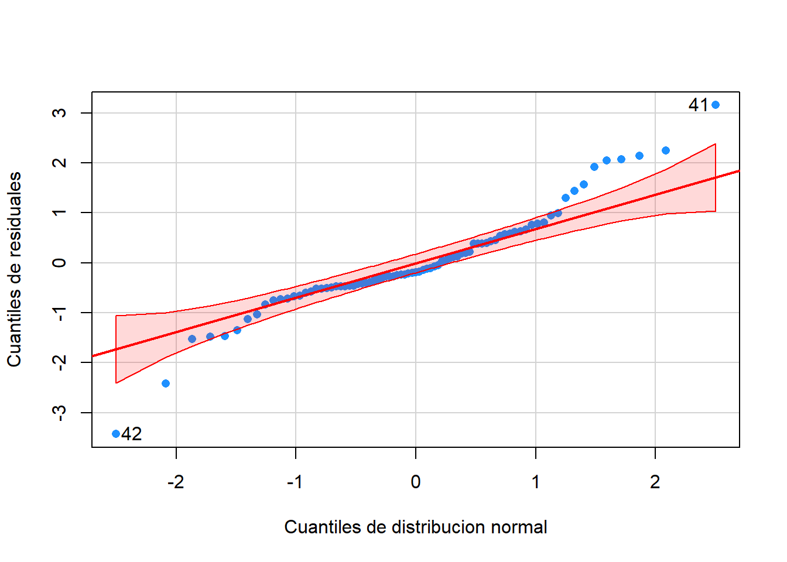
[1] 42 41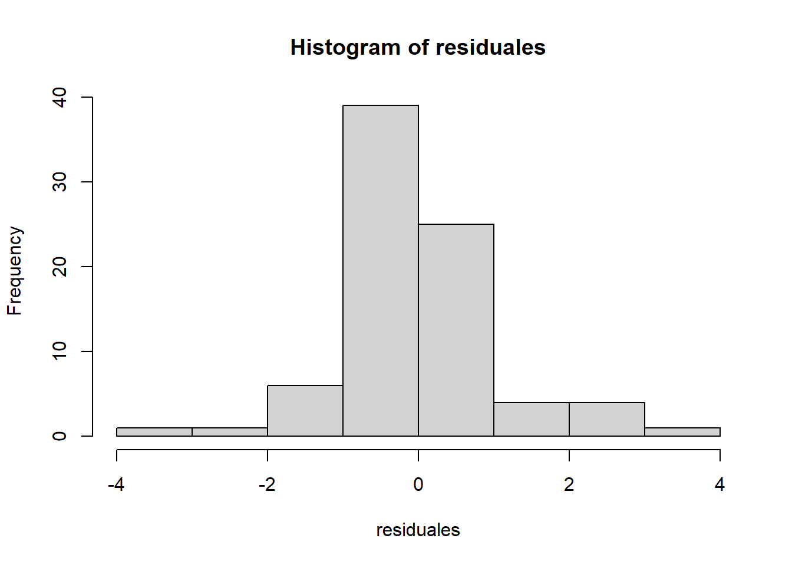
Prueba estadística
Como se puedo observar anteriormente, este modelo no cumple el supuesto de normalidad, ya que sus valores p en las diferentes pruebas dan menor al nivel de significancia determinado en 0.05.
Shapiro-Wilk normality test
data: residuales
W = 0.94094, p-value = 0.0009964
Anderson-Darling normality test
data: residuales
A = 1.8063, p-value = 0.0001167
Jarque Bera Test
data: residuales
X-squared = 14.629, df = 2, p-value = 0.0006658Como este modelo no cumple el supuesto de normalidad no se debería seguir con la validación, pero, debido a que es un análisis exploratorio y que con el histograma de los residuales podemos ver que los datos tienen un aire a una distribución normal, decidimos seguir trabajando con este modelo.
Homocedasticidad
Gráficos
De acuerdo a la gráfica podemos afirmar que los datos no siguen una tendencia en especifico, y que se encuentran dentro de las bandas de confianza, por ende, podriamos decir que se cumple este supuesto de varianza constante.
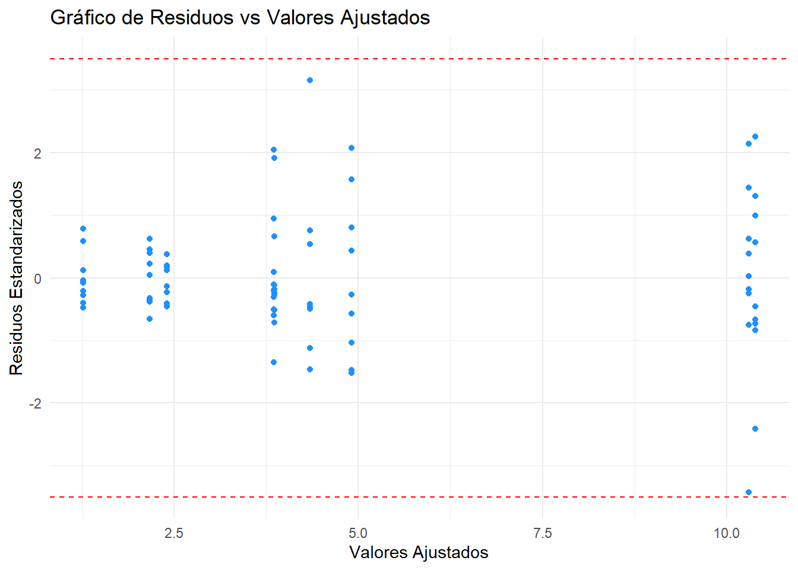
Prueba estadística
Con el resultado de esta prueba estadística, la cual arroja un valor p igual a 0.1867, valor mayor al nivel de significancia (0.05), podemos confirmar al igual que la gráfica anterior, que el modelo presenta varianza constante, es decir, es homocedastico.
studentized Breusch-Pagan test
data: modelo
BP = 11.273, df = 8, p-value = 0.1867Independencia
Gráficos
De acuerdo al gráfico observamos que hay bastante dispersion y que no se sigue ningún patrón en específico, indicando que se cumple el supuesto de independencia.
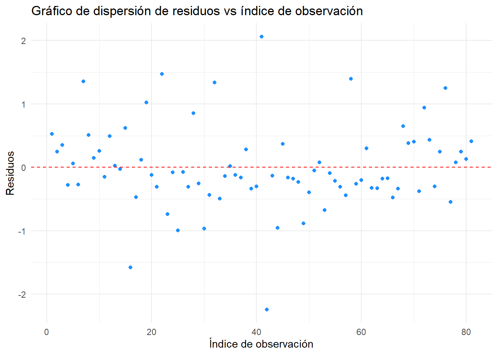
Prueba estadística**
Esta prueba estadística, con un valor p igual a 0.9779, mayor al nivel de significancia definido, nos confirma que se cumple el supuesto de independencia.
Durbin-Watson test
data: modelo
DW = 2.4273, p-value = 0.9779
alternative hypothesis: true autocorrelation is greater than 0Comparación de tratamientos
Comparación de medias de tratamientos
En la primera gráfica se puede observar que el primer tipo de almacenamiento es significativamente diferente del tercer y segundo tipo de almacenamiento. Esto se puede observar también en la prueba LSD.test, ya que se pueden ver cómo los diferentes tratamientos no contienen el número 0 entre sus intervalos.
Para la segunda gráfica en sus tipos de archivos dos y tres se tiene una igualdad en sus medias, indicando que en sus intervalos se contiene el 0, esto lo podemos ver en la prueba de LSD.test, concluyendo que ambas no tienen una diferencia significativa en sus medias respecto al primer tipo de archivo.
Study: modelo ~ "Almacenamiento"
LSD t Test for Tiempo
Mean Square Error: 0.4807361
Almacenamiento, means and individual ( 95 %) CI
Tiempo std r se LCL UCL Min Max Q25 Q50 Q75
1 8.531852 2.7629388 27 0.1334355 8.265853 8.797851 3.91 11.86 5.680 9.91 10.63
2 1.948519 0.5592076 27 0.1334355 1.682520 2.214517 0.96 2.65 1.500 2.10 2.45
3 4.019259 0.7195401 27 0.1334355 3.753260 4.285258 2.97 6.41 3.565 3.78 4.18
Alpha: 0.05 ; DF Error: 72
Critical Value of t: 1.993464
Comparison between treatments means
difference pvalue signif. LCL UCL
1 - 2 6.583333 0 *** 6.207154 6.959513
1 - 3 4.512593 0 *** 4.136413 4.888772
2 - 3 -2.070741 0 *** -2.446920 -1.694562
Study: modelo ~ "Archivo"
LSD t Test for Tiempo
Mean Square Error: 0.4807361
Archivo, means and individual ( 95 %) CI
Tiempo std r se LCL UCL Min Max Q25 Q50 Q75
1 3.342593 1.672013 27 0.1334355 3.076594 3.608591 0.96 6.26 1.50 3.72 4.500
2 5.683333 3.508612 27 0.1334355 5.417334 5.949332 2.10 11.70 2.59 4.04 9.975
3 5.473704 3.661964 27 0.1334355 5.207705 5.739703 1.74 11.86 2.45 3.70 9.875
Alpha: 0.05 ; DF Error: 72
Critical Value of t: 1.993464
Comparison between treatments means
difference pvalue signif. LCL UCL
1 - 2 -2.3407407 0.0000 *** -2.7169200 -1.9645615
1 - 3 -2.1311111 0.0000 *** -2.5072903 -1.7549319
2 - 3 0.2096296 0.2703 -0.1665496 0.5858088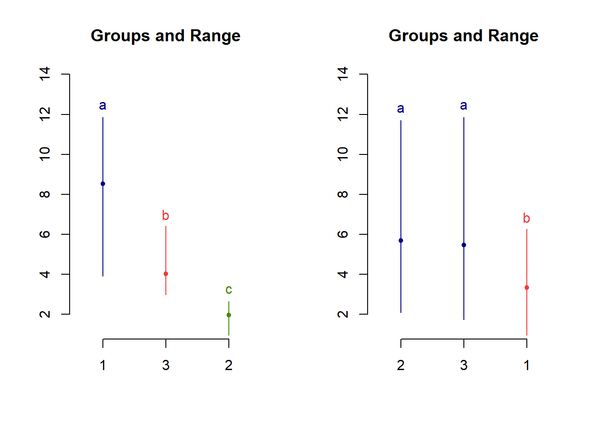
En la primer gráfica del almacenamiento, al comparar las diferentes combinaciones de estos factores, vemos que ninguna de estas comparaciones incluye el 0, dando a entender que sus medias son diferentes, esto lo podemos ver estadísticamente en la prueba HSD.test. De igual forma sucede en la gráfica dos, solo que la comparación 3 - 2 se ve que se incluye el 0, por ende se concluye para este único caso que las medias son iguales, resultado comprobado por la prueba de HSD.test.
Study: modelo ~ "Almacenamiento"
HSD Test for Tiempo
Mean Square Error: 0.4807361
Almacenamiento, means
Tiempo std r se Min Max Q25 Q50 Q75
1 8.531852 2.7629388 27 0.1334355 3.91 11.86 5.680 9.91 10.63
2 1.948519 0.5592076 27 0.1334355 0.96 2.65 1.500 2.10 2.45
3 4.019259 0.7195401 27 0.1334355 2.97 6.41 3.565 3.78 4.18
Alpha: 0.05 ; DF Error: 72
Critical Value of Studentized Range: 3.384388
Comparison between treatments means
difference pvalue signif. LCL UCL
1 - 2 6.583333 0 *** 6.131736 7.034931
1 - 3 4.512593 0 *** 4.060995 4.964190
2 - 3 -2.070741 0 *** -2.522338 -1.619143
Study: modelo ~ "Archivo"
HSD Test for Tiempo
Mean Square Error: 0.4807361
Archivo, means
Tiempo std r se Min Max Q25 Q50 Q75
1 3.342593 1.672013 27 0.1334355 0.96 6.26 1.50 3.72 4.500
2 5.683333 3.508612 27 0.1334355 2.10 11.70 2.59 4.04 9.975
3 5.473704 3.661964 27 0.1334355 1.74 11.86 2.45 3.70 9.875
Alpha: 0.05 ; DF Error: 72
Critical Value of Studentized Range: 3.384388
Comparison between treatments means
difference pvalue signif. LCL UCL
1 - 2 -2.3407407 0.0000 *** -2.792338 -1.8891431
1 - 3 -2.1311111 0.0000 *** -2.582709 -1.6795135
2 - 3 0.2096296 0.5105 -0.241968 0.6612273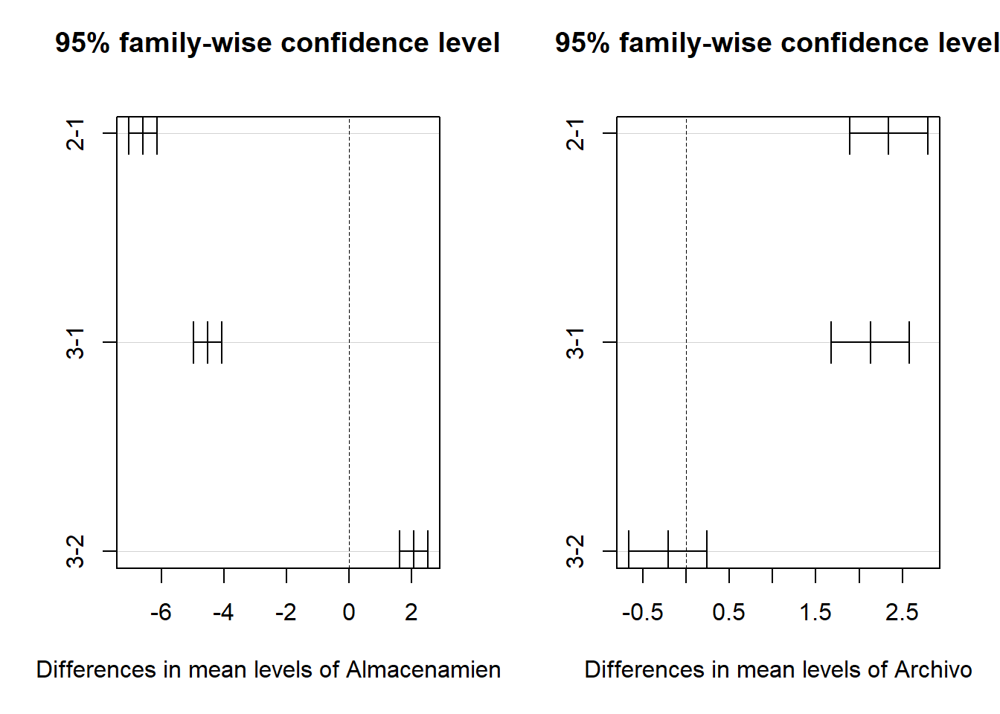
Gráfico de superficie y modelo de respuesta
Call:
lm(formula = Tiempo ~ Almacenamiento * Archivo, data = ZZZ1)
Residuals:
Min 1Q Median 3Q Max
-4.1588 -2.3532 0.6395 1.4931 4.6105
Coefficients:
Estimate Std. Error t value Pr(>|t|)
(Intercept) 4.8332 0.2620 18.444 < 2e-16 ***
Almacenamiento -2.2563 0.3209 -7.030 7.29e-10 ***
Archivo 1.0656 0.3209 3.320 0.00138 **
Almacenamiento:Archivo -1.3692 0.3931 -3.483 0.00082 ***
---
Signif. codes: 0 '***' 0.001 '**' 0.01 '*' 0.05 '.' 0.1 ' ' 1
Residual standard error: 2.358 on 77 degrees of freedom
Multiple R-squared: 0.4852, Adjusted R-squared: 0.4652
F-statistic: 24.19 on 3 and 77 DF, p-value: 3.939e-11En los gráficos 2D y 3D respectivamente, podemos observar que la mejor combinación posible para minimizar el tiempo de transferencia sería la (1,1), que reduce el tiempo a 2,27 segundos. Esta conclusión, teniendo en cuenta todos los resultados de las pruebas y los gráficos anteriores, no sería correcta.
En nuestra base de datos los factores estaban asignados de la siguiente manera: En el tipo de almacenamiento teniamos el 1 como USB, el 2 como Disco Duro, y el 3 como Nube, por ende, en la base de datos codificada se le asigno a la USB el -1, al Disco Duro el 0, y a la Nube el 1. Del mismo modo, se realizó para el factor tipo de archivo. La mejor combinación que nos arrojan la gráfica 2D y 3D para minimizar esos tiempos de transferencia seria la Nube y el archivo tipo TXT, sin embargo, teniendo en cuenta las comparaciones medias de los tratamientos, la mejor combinación que minimiza el tiempo de transferencia sería el almacenamiento en Disco Duro y el tipo de archivo XlSX. Esto en la base codificada sería el intercepto(0, -1)
Según lo expuesto anteriormente, se puede observar que la mejor combinación para minimizar los tiempos de transferencia de archivos sera la combinación de Disco Duro y archivo Xlsx, por eso exponemos que estas gráficas son erróneas, y no muestran la realidad de los resultados obtenidos.
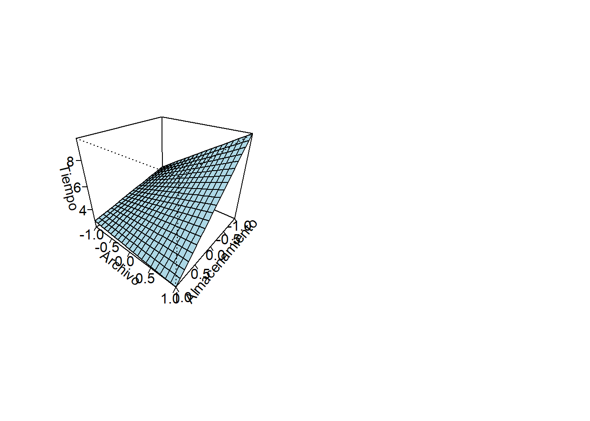
Potencia
Preguntas a responder
¿Cuál es la potencia alcanzada con el número de réplicas usadas?, ¿Si se deseara una potencia del 90%, cuántas réplicas se debieron haber usado?
Con el número de réplicas usadas durante este experimento, y con un nivel de significancia del 0.05, considerando 2 factores con 3 niveles para cada uno, podemos alcanzar una potencia del 0.9999559, es decir, una potencia del 99%, un valor excelente.
Balanced two-way analysis of variance power calculation
a = 3
b = 3
n.A = 6
n.B = 6
sig.level = 0.05
power.A = 0.9999559
power.B = 0.9999559
power = 0.9999559
NOTE: power is the minimum power among two factorsPara llegar a una potencia del 90%, un valor que también es muy bueno, era necesario realizar 27 observaciones en el experimento. De esto, podemos concluir que no eran necesarias 81 observaciones, pues con esta cantidad de observaciones se obtiene una buena potencia.
Balanced two-way analysis of variance sample size adjustment
a = 3
b = 3
sig.level = 0.05
power = 0.9
n = 3
NOTE: n is number in each group, total sample = 27Conclusiones
• El análisis experimental permitió identificar que el uso de archivos en formato xlsx y dispositivos de almacenamiento tipo disco duro minimiza significativamente los tiempos de transferencia. Esto sugiere que, para las operaciones de DataXD, priorizar estos elementos en los procesos de manejo de bases de datos resulta en una mejora tangible en la eficiencia operativa, reduciendo tiempos muertos y costos asociados.
• Los resultados muestran que la memoria RAM no tiene un impacto significativo en los tiempos de transferencia de datos en este contexto. Esto indica que las inversiones en aumentar la capacidad de RAM no aportarán mejoras considerables en este proceso específico, permitiendo a DataXD redirigir recursos a áreas más estratégicas.
Referencias
(Wickham 2016; Zeileis y Hothorn 2002; Warnes et al. 2024; 2024; Sievert 2020; Wickham y Bryan 2023; Mendiburu 2023; Champely 2020; Lu, Liu, y Koestler 2017; Trapletti y Hornik 2024; Gross y Ligges 2015; Fox, Weisberg, y Price 2022; Fox y Weisberg 2019)
Referencias
Champely, Stephane. 2020. «pwr: Basic Functions for Power Analysis». https://CRAN.R-project.org/package=pwr.
Fox, John, y Sanford Weisberg. 2019. «An R Companion to Applied Regression». https://socialsciences.mcmaster.ca/jfox/Books/Companion/.
Fox, John, Sanford Weisberg, y Brad Price. 2022. «carData: Companion to Applied Regression Data Sets». https://CRAN.R-project.org/package=carData.
Gross, Juergen, y Uwe Ligges. 2015. «nortest: Tests for Normality». https://CRAN.R-project.org/package=nortest.
Lu, Pengcheng, Junhao Liu, y Devin Koestler. 2017. «pwr2: Power and Sample Size Analysis for One-way and Two-way ANOVA Models». https://CRAN.R-project.org/package=pwr2.
Mendiburu, Felipe de. 2023. «agricolae: Statistical Procedures for Agricultural Research». https://CRAN.R-project.org/package=agricolae.
R Core Team. 2024. «R: A Language and Environment for Statistical Computing». https://www.R-project.org/.
Sievert, Carson. 2020. «Interactive Web-Based Data Visualization with R, plotly, and shiny». https://plotly-r.com.
Trapletti, Adrian, y Kurt Hornik. 2024. «tseries: Time Series Analysis and Computational Finance». https://CRAN.R-project.org/package=tseries.
Warnes, Gregory R., Ben Bolker, Lodewijk Bonebakker, Robert Gentleman, Wolfgang Huber, Andy Liaw, Thomas Lumley, et al. 2024. «gplots: Various R Programming Tools for Plotting Data». https://CRAN.R-project.org/package=gplots.
Wickham, Hadley. 2016. «ggplot2: Elegant Graphics for Data Analysis». https://ggplot2.tidyverse.org.
Wickham, Hadley, y Jennifer Bryan. 2023. «readxl: Read Excel Files». https://CRAN.R-project.org/package=readxl.
Zeileis, Achim, y Torsten Hothorn. 2002. «Diagnostic Checking in Regression Relationships» 2. https://CRAN.R-project.org/doc/Rnews/.